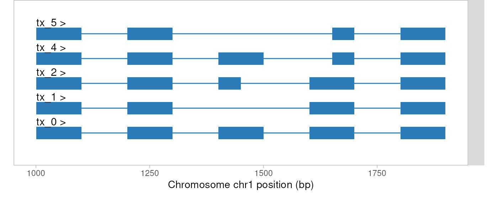
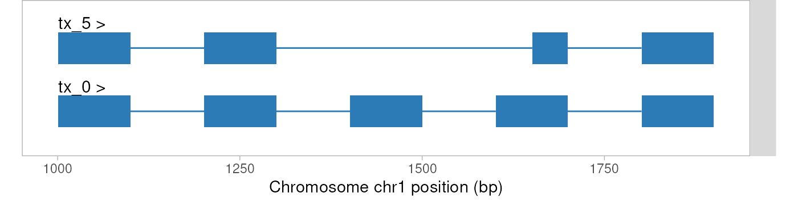
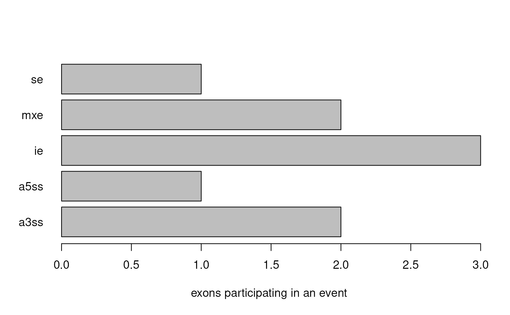

splicelogic: transcript sets to splice events
Beatriz Campillo
Michael I. Love
09/03/2026
Source:vignettes/splicelogic.Rmd
splicelogic.RmdIntroduction
splicelogic turns sets of transcripts into discrete splicing events. Unlike event-based tools that work at the junction level, splicelogic operates on whole transcript structures: within each gene it compares two groups of transcripts and all of their exons, so events are derived with full isoform context. It detects skipped exons, included exons, mutually exclusive exons, retained introns, and alternative 5’ and 3’ splice sites.
splicelogic allows the two groups of transcripts to be compared to be defined upstream in one of two ways. They can come from an explicit partition of the transcripts into two sets, e.g. a set of novel transcripts against a set of annotated reference transcripts, or transcripts found in disease samples relative to those found in control samples. Or they can come from a differential transcript usage (DTU) analysis, which gives each transcript an effect estimate whose sign defines the comparison. Because it takes transcript-level results tables as input, splicelogic is compatible with any upstream DTU method (including DRIMSeq, DEXSeq, satuRn, and edgeR), supporting flexible experimental designs.
splicelogic operates on exon-level data stored as GRanges objects. Given a set of exons carrying the gene ID, transcript ID, exon rank, and a value indicating the direction of change, splicelogic identifies the following types of splicing events:
- Skipped exons (SE) – exons skipped in up-regulated transcripts
- Included exons (IE) – exons included in up-regulated transcripts
- Mutually exclusive exons (MXE) – pairs of exons where one is included and another is excluded in up-regulated transcripts compared to down-regulated transcripts
- Retained introns (RI) – intronic regions that are retained as part of an exon in up-regulated transcripts
- Alternative 5’ (A5SS) – exons in up-regulated transcripts that share the same 3’ splice site but differ at the 5’ splice site from exons in down-regulated transcripts
- Alternative 3’ (A3SS) – as above, but differing in the 3’ splice site
These are detected using a series of functions,
e.g. find_se(), find_ie(), etc., summarized in
the find_*() functions.
Several alternative tools exist for detecting splicing events from RNA-seq data and analyzing their consequences:
IsoformSwitchAnalyzeR — a comprehensive workflow that performs DTU testing, annotates the resulting isoform switches with splicing event types, and predicts functional consequences such as domain loss and NMD.
GeneStructureTools — takes differential splicing results from read-based tools such as Whippet or leafcutter (which detect splicing events from junction counts), classifies the event types, and assesses their structural and functional consequences such as ORF changes, NMD potential, and UTR structure.
isoformic — a visualization and functional interpretation pipeline for pre-computed differential transcript expression results. It organizes transcripts by biotype (protein-coding, lncRNA, NMD, etc.) and provides expression profile plots and functional enrichment analysis.
splicelogic differs from these in its main input and focus: it does not perform DTU testing, and also does not take pre-computed splicing events as input. Instead, it works from two groups of transcripts (either an explicit partition or transcript-level DTU results already mapped onto exon structures) and directly classifies the type of splicing event from the comparison of the two groups.
By operating on exon-level GRanges with attached DTU statistics, splicelogic provides a flexible framework for users to identify and interpret splicing events in the context of their specific experimental design and choice of DTU method. GRanges are a common data structure in Bioconductor for representing genomic features such as exons and introns, making splicelogic compatible with a wide range of already available tools and existing workflows. For example, it can be combined with plyranges for dplyr-like operations on exons/introns following identification of regulated exon and introns, and Biostrings for extraction of sequence surrounding splice events.
Quick start
splicelogic turns a set of transcripts into discrete splice
events. There are two entry points, depending on what is available
upstream. Both build a flat GRanges of exons that
preprocess() prepares for the find_*()
functions, and from that point on the workflow is identical.
Finding events from transcript sets
To find splicing events from two sets of transcripts we use
prepare_exons_by_partition(). down is the
anchor, or reference group, and up holds the alternative
transcripts that are read against it: the function assigns
estimate = -1 to down and
estimate = +1 to up. Each set is given either
as a GRanges of exons or as a character vector of transcript
IDs (the latter needs a TxDb to look up the exon
coordinates):
exons <- prepare_exons_by_partition(
up = <GRanges OF EXONS, OR TX IDs>,
down = <GRanges OF EXONS, OR TX IDs>
) |>
preprocess(coef_col = "estimate")
# find e.g. skipped exons:
skipped <- exons |> find_se()This route is worked through in finding events from transcript sets.
Finding events from DTU results
Each transcript carries a numeric effect estimate from a differential transcript usage analysis, and the sign of that estimate defines the comparison:
exons <- prepare_exons(
txdb = <A TxDb OBJECT>,
dtu_table = <DTU_TABLE>,
coef_col = "estimate"
)
exons <- preprocess(exons, coef_col = "estimate")
# find e.g. skipped exons:
skipped <- exons |> find_se()This route is worked through in full with a published dataset in Finding events after DTU analysis.
Input data
Within each gene, splicelogic compares two groups of transcripts and works out the splice events that distinguish them. It does not decide what those two groups are; that is settled upstream, in one of two ways:
By an explicit partition of the transcripts into two sets, with no differential analysis behind it. Direction comes from set membership alone, and
prepare_exons_by_partition()fills in the estimates.By a differential transcript usage (DTU) or differential splicing analysis, which gives each transcript an effect estimate with a direction — a GLM coefficient, a change in percent-spliced-in (PSI), and so on — usually alongside a statistic such as an adjusted p-value for restricting to a significant set. See upstream DTU methods.
splicelogic also assumes the user has information about the genomic ranges for the exons of each transcript. splicelogic provides a set of helper functions for generating these exon ranges, see obtaining exon ranges.
Either way, the exons are provided in a flat
GRanges object (one range per exon), containing exon-level
metadata in mcols(exons): the gene ID, transcript ID, rank
in the transcript, and a value giving the direction of change for the
transcript.
Required columns for exons:
| Column | Description |
|---|---|
gene_id |
Gene identifier |
tx_id |
Transcript identifier |
exon_rank |
Exon rank within the transcript |
coef_col = "<user supplied>" |
Effect estimate, or direction of change, for the transcript |
The effect estimate column is named by the user in
preprocess(). This should be the value associated with the
specific transcript containing the exon, and minimally could indicate
the direction of effect with +1/-1 — which is exactly what
prepare_exons_by_partition() supplies when there is no
differential analysis to draw on. Positive values indicate up-regulated
exons and negative values indicate down-regulated exons; the negative
group is the reference, whose exons are tested against those of the
positive group. All exons from the same transcript will share the same
value for this column.
The find_*() functions
One function detects each event type. All of them take as their first
argument an exon GRanges that has been through
preprocess(), and return event GRanges in the same
shape (see output format), so they can be
called in any order or all at once with
find_all_events().
Throughout, up and down refer to the sign of the effect estimate: down transcripts are the reference group, and the events are what the up transcripts do relative to them.
| Function | event_type |
Detects | Exons returned |
|---|---|---|---|
find_se() |
"se" |
An exon of a down transcript that is absent from an up transcript of the same gene, whose two flanking exons are adjacent in that up transcript | The skipped exon, from the down transcript |
find_ie() |
"ie" |
The mirror image of SE: an exon of an up transcript absent from a down transcript of the same gene | The included exon, from the up transcript |
find_mxe() |
"mxe" |
Two non-overlapping exons, one in each transcript, sitting between the same pair of flanking exons | Both exons of the pair, one row each, interleaved |
find_ri() |
"ri" |
An intron of a down transcript that falls entirely within a single exon of an up transcript of the same gene | The exon retaining the intron, from the up transcript |
find_a5ss() |
"a5ss" |
An up exon sharing the 3’ splice site (acceptor) of a down exon but differing at the 5’ splice site (donor) | The exon with the alternative donor, from the up transcript |
find_a3ss() |
"a3ss" |
The reverse: shared donor, differing acceptor | The exon with the alternative acceptor, from the up transcript |
find_all_events() |
all of the above | Runs the six finders in turn and binds the results | All exons returned by the individual finders |
find_se(), find_ie(),
find_mxe() and find_all_events() also take a
type argument, controlling how an exon flanking a candidate
is matched to an exon of the partner transcript: "boundary"
(the default) requires only the shared splice site to coincide,
"over" accepts any overlap, and "in" requires
the two exons to be identical.
Every finder has a long-form alias that spells the event type out —
find_skipped_exons(), find_included_exons(),
find_mutually_exclusive_exons(),
find_retained_introns(),
find_alternative_5_prime_splice_sites() and
find_alternative_3_prime_splice_sites() — for use where a
script reads better with the full name. They are the same functions, so
find_se() and find_skipped_exons() are
interchangeable.
Worked examples of all of these are in finding individual events.
Output format
All find_*() functions return a GRanges whose
ranges are the exons detected to be involved in an event. Each row
therefore carries the user’s original exon-level metadata — including
tx_id, the transcript that the detected exon belongs to —
together with the following event-specific columns added in
mcols() that describe the paired transcript
against which the event is defined:
| Column | Description |
|---|---|
event_type |
Type of splicing event detected ("se",
"ie", "mxe", "ri",
"a5ss", or "a3ss"). |
event_tx_id |
Transcript ID of the paired transcript that, together with
the detected exon’s transcript (tx_id), defines the
event. |
event_estimate |
DTU coefficient (estimate) of the paired
transcript. |
event_<col> |
One column per name in metadata(gr)$additional_columns,
prefixed with event_, carrying the corresponding value from
the paired transcript. |
In short: the original metadata columns describe the transcript that
contains the returned exon, while all columns with the prefix
event_* describe the paired transcript against which the
event is defined.
Finding splicing events
The rest of the vignette works through two examples that reach the
same find_*() functions by different routes. The first
starts from two sets of transcripts, partitioned into up
and down by the user. The second starts from a DTU
analysis, where every transcript carries a numeric effect estimate. Both
produce the same kind of exon-level GRanges, and from
preprocess() onwards the workflow is identical.
Finding events from transcript sets
Often what we have is two sets of transcripts we want to compare,
e.g. a set of novel transcripts against a set of annotated reference
transcripts, or transcripts found in disease samples relative to those
found in control samples. We can use
prepare_exons_by_partition() to build the input for
splicelogic.
Input format
The exons are as described in input data,
except that no coefficient column is needed:
prepare_exons_by_partition() takes the two sets as
up and down, assigns
estimate = +1 and estimate = -1 respectively,
and returns a single GRanges ready for
preprocess() with coef_col = "estimate".
Which set goes where matters. down is the anchor, or
reference group, and up the alternative transcripts read
against it: the finders take the exons of the down
transcripts and ask which of them are missing from, or truncated in, the
up transcripts of the same gene.
The simplest way to use prepare_exons_by_partition() is
to pass the two sets as character vectors of transcript IDs, along with
a TxDb object that splicelogic uses to look up the
exon coordinates. A TxDb can be built from a GTF file
(e.g. from Ensembl or GENCODE) using:
txdb <- txdbmaker::makeTxDbFromGFF("path/to/annotation.gtf")Alternatively, if exon coordinates are already available as a GRanges, those can be passed directly.
For more details on preparing exons as input see the vignette section comparing two_sets.
A synthetic exon set
To demonstrate this route we use a small synthetic exon set saved as
a small BED file within the package, mock_exons.bed. It
contains a single gene, gene_1, on the +
strand, with five transcripts all derived from the same five-exon
baseline (exons of 100 bp separated by introns of 100 bp):
-
tx_0— the anchor transcript, with all five exons present -
tx_1— exon 3 skipped -
tx_2— exon 3 with an alternative 5’ splice site -
tx_4— exon 4 with an alternative 3’ splice site -
tx_5— exon 3 skipped and exon 4 with an alternative 3’ splice site
The script that generated the files is
inst/scripts/make-mock-data.R. Because BED can only carry
chrom/start/end/name/score/strand, the ranges and the metadata columns
splicelogic needs are stored in two files and joined on read —
the same pairing used for the Jones exons below.
library(splicelogic)
library(plyranges)
dir <- system.file("extdata", package = "splicelogic")
mock_exons <- plyranges::read_bed(file.path(dir, "mock_exons.bed.gz"))
GenomicRanges::mcols(mock_exons) <- S4Vectors::DataFrame(
readr::read_tsv(
file.path(dir, "mock_exons_mcols.tsv.gz"),
show_col_types = FALSE
)
)
mock_exons |>
dplyr::select(-gene_id)## GRanges object with 23 ranges and 3 metadata columns:
## seqnames ranges strand | tx_id exon_id exon_rank
## <Rle> <IRanges> <Rle> | <character> <character> <numeric>
## [1] chr1 1001-1100 + | tx_0 gene_1:1001-1100 1
## [2] chr1 1201-1300 + | tx_0 gene_1:1201-1300 2
## [3] chr1 1401-1500 + | tx_0 gene_1:1401-1500 3
## [4] chr1 1601-1700 + | tx_0 gene_1:1601-1700 4
## [5] chr1 1801-1900 + | tx_0 gene_1:1801-1900 5
## ... ... ... ... . ... ... ...
## [19] chr1 1801-1900 + | tx_2 gene_1:1801-1900 5
## [20] chr1 1001-1100 + | tx_5 gene_1:1001-1100 1
## [21] chr1 1201-1300 + | tx_5 gene_1:1201-1300 2
## [22] chr1 1651-1700 + | tx_5 gene_1:1651-1700 3
## [23] chr1 1801-1900 + | tx_5 gene_1:1801-1900 4
## -------
## seqinfo: 1 sequence from an unspecified genome; no seqlengthsWe can visualize the five transcripts with
wiggleplotr::plotTranscripts().
mock_grl <- S4Vectors::split(mock_exons, mock_exons$tx_id)
wiggleplotr::plotTranscripts(mock_grl, rescale_introns = FALSE)
Building the input by partition
tx_0 is the baseline that every other transcript was
derived from, which makes it the anchor: we put it on its own in
down and all of the remaining transcripts in
up, so that each variant is read against the baseline.
mock <- prepare_exons_by_partition(
up = mock_exons |> dplyr::filter(tx_id != "tx_0"),
down = mock_exons |> dplyr::filter(tx_id == "tx_0")
) |>
preprocess(coef_col = "estimate")
mock |> head(2)## GRanges object with 2 ranges and 8 metadata columns:
## seqnames ranges strand | gene_id tx_id exon_id
## <Rle> <IRanges> <Rle> | <character> <character> <character>
## [1] chr1 1001-1100 + | gene_1 tx_1 gene_1:1001-1100
## [2] chr1 1201-1300 + | gene_1 tx_1 gene_1:1201-1300
## exon_rank estimate key nexons internal
## <numeric> <integer> <character> <integer> <logical>
## [1] 1 1 tx_1-1 4 FALSE
## [2] 2 1 tx_1-2 4 TRUE
## -------
## seqinfo: 1 sequence from an unspecified genome; no seqlengthsFinding events
find_all_events() wraps the six event finders (the find_*() functions), which
can also be called one at a time — see finding individual events below:
mock_events <- mock |> find_all_events()## Calculating skipped exon events...## Calculating included exon events...## Calculating mutually exclusive exon events...## Calculating retained intron events...## Calculating alternative 5' splice site events...## Calculating alternative 3' splice site events...## Done! 5 events detected.
mock_events## GRanges object with 5 ranges and 8 metadata columns:
## seqnames ranges strand | gene_id tx_id exon_id
## <Rle> <IRanges> <Rle> | <character> <character> <character>
## [1] chr1 1401-1500 + | gene_1 tx_0 gene_1:1401-1500
## [2] chr1 1401-1500 + | gene_1 tx_0 gene_1:1401-1500
## [3] chr1 1401-1450 + | gene_1 tx_2 gene_1:1401-1450
## [4] chr1 1651-1700 + | gene_1 tx_4 gene_1:1651-1700
## [5] chr1 1651-1700 + | gene_1 tx_5 gene_1:1651-1700
## exon_rank estimate event_type event_tx_id event_estimate
## <numeric> <integer> <character> <character> <integer>
## [1] 3 -1 se tx_1 1
## [2] 3 -1 se tx_5 1
## [3] 3 1 a5ss tx_0 -1
## [4] 4 1 a3ss tx_0 -1
## [5] 3 1 a3ss tx_0 -1
## -------
## seqinfo: 1 sequence from an unspecified genome; no seqlengthsEvery event built into the set is recovered. Exon 3 of
tx_0 is reported as a skipped exon twice, once against
tx_1 and once against tx_5, because both of
those transcripts skip it. The shortened exon 3 of tx_2 is
reported as an alternative 5’ splice site, and the shortened exon 4 as
an alternative 3’ splice site in both tx_4 and
tx_5. As explained in output
format, the skipped exon rows belong to tx_0, the down
transcript that actually contains the exon, while the alternative splice
site rows belong to the up transcripts; in both cases the partner
transcript is in event_tx_id.
Collapsing redundant events
Because an exon can participate in an event against more than one
partner transcript, the same range can appear on several rows. To get
one call per exon and event type, with the partners concatenated, we can
group by exon_id and event_type, then use
plyranges to collapse the ranges and concatenate the partner
transcript IDs. The new columns after grouping tell us the number of
pairs (n) and collapse other informative variables.
# define a helper function
my_paste <- \(x) paste(unique(x), collapse = ",")
# `exon_id` is usually found in the metadata columns in the input exons.
# If not available, we can build it from the gene and the exon coordinates — the same
# exon then gets the same id in every transcript that contains it:
# mock_events <- mock_events |>
# dplyr::mutate(exon_id = paste0(gene_id, ":", start, "-", end))
mock_events |>
dplyr::group_by(exon_id, event_type) |>
plyranges::reduce_ranges_directed(
n = plyranges::n(),
tx_id = my_paste(tx_id),
exon_rank = my_paste(exon_rank),
event_tx_id = my_paste(event_tx_id),
)## GRanges object with 3 ranges and 6 metadata columns:
## seqnames ranges strand | exon_id event_type n
## <Rle> <IRanges> <Rle> | <character> <character> <integer>
## [1] chr1 1401-1500 + | gene_1:1401-1500 se 2
## [2] chr1 1401-1450 + | gene_1:1401-1450 a5ss 1
## [3] chr1 1651-1700 + | gene_1:1651-1700 a3ss 2
## tx_id exon_rank event_tx_id
## <character> <character> <character>
## [1] tx_0 3 tx_1,tx_5
## [2] tx_2 3 tx_0
## [3] tx_4,tx_5 4,3 tx_0
## -------
## seqinfo: 1 sequence from an unspecified genome; no seqlengthsIdentifying complex events
We want to identify events that happen in the same transcript pair that lead into complex splicicing events. To do this, we can group the events by transcript pairs, since each event is defined by a pair of transcripts.
events_by_pair <- mock_events |>
dplyr::mutate(
tx_pair = paste0(
pmin(tx_id, event_tx_id), "-", pmax(tx_id, event_tx_id)
)
)
S4Vectors::split(events_by_pair, events_by_pair$tx_pair)## GRangesList object of length 4:
## $`tx_0-tx_1`
## GRanges object with 1 range and 9 metadata columns:
## seqnames ranges strand | gene_id tx_id exon_id
## <Rle> <IRanges> <Rle> | <character> <character> <character>
## [1] chr1 1401-1500 + | gene_1 tx_0 gene_1:1401-1500
## exon_rank estimate event_type event_tx_id event_estimate tx_pair
## <numeric> <integer> <character> <character> <integer> <character>
## [1] 3 -1 se tx_1 1 tx_0-tx_1
## -------
## seqinfo: 1 sequence from an unspecified genome; no seqlengths
##
## $`tx_0-tx_2`
## GRanges object with 1 range and 9 metadata columns:
## seqnames ranges strand | gene_id tx_id exon_id
## <Rle> <IRanges> <Rle> | <character> <character> <character>
## [1] chr1 1401-1450 + | gene_1 tx_2 gene_1:1401-1450
## exon_rank estimate event_type event_tx_id event_estimate tx_pair
## <numeric> <integer> <character> <character> <integer> <character>
## [1] 3 1 a5ss tx_0 -1 tx_0-tx_2
## -------
## seqinfo: 1 sequence from an unspecified genome; no seqlengths
##
## $`tx_0-tx_4`
## GRanges object with 1 range and 9 metadata columns:
## seqnames ranges strand | gene_id tx_id exon_id
## <Rle> <IRanges> <Rle> | <character> <character> <character>
## [1] chr1 1651-1700 + | gene_1 tx_4 gene_1:1651-1700
## exon_rank estimate event_type event_tx_id event_estimate tx_pair
## <numeric> <integer> <character> <character> <integer> <character>
## [1] 4 1 a3ss tx_0 -1 tx_0-tx_4
## -------
## seqinfo: 1 sequence from an unspecified genome; no seqlengths
##
## $`tx_0-tx_5`
## GRanges object with 2 ranges and 9 metadata columns:
## seqnames ranges strand | gene_id tx_id exon_id
## <Rle> <IRanges> <Rle> | <character> <character> <character>
## [1] chr1 1401-1500 + | gene_1 tx_0 gene_1:1401-1500
## [2] chr1 1651-1700 + | gene_1 tx_5 gene_1:1651-1700
## exon_rank estimate event_type event_tx_id event_estimate tx_pair
## <numeric> <integer> <character> <character> <integer> <character>
## [1] 3 -1 se tx_5 1 tx_0-tx_5
## [2] 3 1 a3ss tx_0 -1 tx_0-tx_5
## -------
## seqinfo: 1 sequence from an unspecified genome; no seqlengthstx_0-tx_5 carries two events, the skipped exon and the
alternative 3’ splice site. Pulling the two transcripts of a pair back
out of the preprocessed exons lets us look at the event in context:
ev <- events_by_pair |>
dplyr::filter(tx_pair == "tx_0-tx_5") |>
head(1)
pair <- mock |>
dplyr::filter(tx_id %in% c(ev$tx_id, ev$event_tx_id))
wiggleplotr::plotTranscripts(
S4Vectors::split(pair, pair$tx_id),
rescale_introns = FALSE
)
Finding events after DTU analysis
Jones et al mouse long read dataset
The second route starts from a real DTU analysis, where the direction of the comparison comes from the effect estimates rather than from a partition we supply. For this we use a published mouse long read dataset and its reported splicing changes.
The citation is:
Emma F. Jones, Timothy C. Howton, Victoria L. Flanary, Amanda D. Clark, Brittany N. Lasseigne Long-read RNA sequencing identifies region- and sex-specific C57BL/6J mouse brain mRNA isoform expression and usage Mol Brain 17, 40 (2024). doi: 10.1186/s13041-024-01112-7
Information about the paper, including code and publicly available data can be found at this URL:
https://github.com/lasseignelab/230227_EJ_MouseBrainIsoDiv
In the abstract, Jones et al. describe the experiment:
To assess differences in AS across the cerebellum, cortex, hippocampus, and striatum by sex, we generated and analyzed Oxford Nanopore Technologies (ONT) long-read RNA sequencing (lrRNA-Seq) C57BL/6J mouse brain cDNA libraries. From > 85 million reads that passed quality control metrics, we calculated differential gene expression (DGE), differential transcript expression (DTE), and differential transcript usage (DTU) across brain regions and by sex.
Here we will focus on the cortex-specific sex comparison, comparing
female to male mice. For demonstration in the vignette, we have saved a
small subset of the results from this Zenodo entry. The dataset
was made available under an MIT license. For information on how the DTU
table was saved, this is noted in inst/scripts/make-data.R.
Generating the exons BED file is also described there, which was
downloaded and parsed from the GENCODE M31 GTF file (comprehensive gene
annotation). See below for more details on how to prepare exons for use
with splicelogic.
Input format
The exons are as described in input data,
and this time the coefficient column is the one reported by the upstream
DTU method — here the DEXSeq estimate, alongside
padj so that we can restrict the input to significant
transcripts. Its sign is what sets the direction of the comparison, so
nothing has to be partitioned by hand.
Loading example data
In this section we load the small example dataset that has been prepared for this vignette. Note that in a typical splicelogic workflow, the exons GRanges would be loaded from a TxDb. See the obtaining exon ranges section below for further details.
We load the differential transcript usage analysis from the Jones et al. paper. Specifically, we load the transcripts found to exhibit DTU in the F vs M comparison in cortex.
The DTU table for this example, and the exons for the differential
transcripts have been saved in the extdata directory of
splicelogic.
The DTU table was generated by the authors of Jones et al., which used IsoformSwitchAnalyzeR to process DTU analysis results from DEXSeq, running on transcript counts instead of exon counts. For splicelogic, we only require that some statistical method was used to test DTU, that we have adjusted p-values allowing us to subset to an FDR bounded set, and that we have a numeric value indicating the direction of change associated with each transcript.
library(readr)
# load DTU results
dir <- system.file("extdata", package="splicelogic")
dtu_table <- readr::read_delim(file.path(dir, "dtu_table.tsv"))We load from BED file the 601 exons from GENCODE M31 annotation for the 49 differential transcripts, and attach the metadata columns.
library(plyranges)
exons_file <- "exons_M31.bed.gz"
exons_mcols_file <- "exons_mcols.tsv.gz"
exons <- plyranges::read_bed(file.path(dir, exons_file))
mcols(exons) <- DataFrame(
readr::read_delim(file.path(dir, exons_mcols_file))
)Finally, we add Seqinfo for mm49, the reference mouse
genome for GENCODE M31.
Next, we join the DTU results onto the exons GRanges.
This is necessary for the splicelogic functions to know which
transcripts are up- or down-regulated, and to which gene the exons and
transcripts belong.
The code below matches the transcript IDs in the exons
metadata with the DTU results table, and then binds the two tables
before assigning back to exons.
txp_idx <- match(exons$tx_id, dtu_table$tx_id)
cols_to_add <- dtu_table[txp_idx, ] |> dplyr::select(-tx_id)
merged_DF <- S4Vectors::cbind(mcols(exons), cols_to_add)
mcols(exons) <- merged_DFAs of Bioc 3.23 and plyranges version 1.32, the above code to add metadata columns from an additional table can be replaced with the following:
exons <- exons |>
plyranges::join_mcols_left(dtu_table, by = "tx_id")splicelogic is designed to take as input the exons from significantly changed transcripts, so we first filter out transcripts that were not signficant at FDR 10%.
## GRanges object with 2 ranges and 8 metadata columns:
## seqnames ranges strand | exon_id exon_name
## <Rle> <IRanges> <Rle> | <numeric> <character>
## [1] chr10 88036955-88037154 + | 304310 ENSMUSE00000574345.8
## [2] chr10 88037674-88037772 + | 304316 ENSMUSE00000417972.4
## exon_rank tx_id gene_id gene_name
## <numeric> <character> <character> <character>
## [1] 1 ENSMUST00000020248.16 ENSMUSG00000020056.17 Washc3
## [2] 2 ENSMUST00000020248.16 ENSMUSG00000020056.17 Washc3
## estimate padj
## <numeric> <numeric>
## [1] -0.264716 0.0449634
## [2] -0.264716 0.0449634
## -------
## seqinfo: 61 sequences (1 circular) from mm39 genomePreprocessing input data
The first step is to run preprocess(), which prepares
the exons for event detection. This function checks the
input data, ensures that the necessary columns are present:
sig_exons <- sig_exons |>
preprocess(coef_col = "estimate")
sig_exons |> head(2)## GRanges object with 2 ranges and 11 metadata columns:
## seqnames ranges strand | exon_id exon_name
## <Rle> <IRanges> <Rle> | <numeric> <character>
## [1] chr10 88036955-88037154 + | 304310 ENSMUSE00000574345.8
## [2] chr10 88037674-88037772 + | 304316 ENSMUSE00000417972.4
## exon_rank tx_id gene_id gene_name
## <numeric> <character> <character> <character>
## [1] 1 ENSMUST00000020248.16 ENSMUSG00000020056.17 Washc3
## [2] 2 ENSMUST00000020248.16 ENSMUSG00000020056.17 Washc3
## estimate padj key nexons internal
## <numeric> <numeric> <character> <integer> <logical>
## [1] -0.264716 0.0449634 ENSMUST00000020248.1.. 7 FALSE
## [2] -0.264716 0.0449634 ENSMUST00000020248.1.. 7 TRUE
## -------
## seqinfo: 61 sequences (1 circular) from mm39 genomepreprocess() also accepts an optional
additional_columns argument. This lets us specify which
metadata columns we want to bring over from the paired transcript
(event_tx_id) into the event output. It takes a character
vector of column names already present in mcols(exons);
each will then appear in the output as event_<col>.
See ?preprocess for details.
Finding individual events
Next we can run the various functions for calculating different types
of splicing events, listed in the
find_*() functions.
Skipped exons (SE)
For example, we can calculate exons that are skipped in up-regulated transcripts relative to down-regulated transcripts, across all genes. As these are skipped in the up-regulated transcripts, it is expected that the exons returned belong to down-regulated transcripts:
skipped <- sig_exons |> find_se()
skipped## GRanges object with 1 range and 11 metadata columns:
## seqnames ranges strand | exon_id exon_name
## <Rle> <IRanges> <Rle> | <numeric> <character>
## [1] chr17 66647479-66647535 - | 480827 ENSMUSE00000443570.7
## exon_rank tx_id gene_id gene_name
## <numeric> <character> <character> <character>
## [1] 14 ENSMUST00000097291.10 ENSMUSG00000052105.18 Mtcl1
## estimate padj event_type event_tx_id event_estimate
## <numeric> <numeric> <character> <character> <numeric>
## [1] -2.9732 0.00970121 se ENSMUST00000086693.12 2.88524
## -------
## seqinfo: 61 sequences (1 circular) from mm39 genomeIncluded exons (IE)
included <- sig_exons |> find_ie()
included## GRanges object with 3 ranges and 11 metadata columns:
## seqnames ranges strand | exon_id exon_name
## <Rle> <IRanges> <Rle> | <numeric> <character>
## [1] chr14 20517526-20517591 - | 408079 ENSMUSE00001423050.2
## [2] chr1 163739641-163739706 + | 12966 ENSMUSE00000368805.4
## [3] chr8 120884207-120884236 + | 250989 ENSMUSE00001243257.2
## exon_rank tx_id gene_id gene_name
## <numeric> <character> <character> <character>
## [1] 6 ENSMUST00000100844.6 ENSMUSG00000021814.18 Anxa7
## [2] 20 ENSMUST00000077642.12 ENSMUSG00000026585.14 Kifap3
## [3] 10 ENSMUST00000034281.13 ENSMUSG00000031824.16 6430548M08Rik
## estimate padj event_type event_tx_id event_estimate
## <numeric> <numeric> <character> <character> <numeric>
## [1] 3.02406 0.018472554 ie ENSMUST00000065504.17 -3.34894
## [2] 1.04389 0.010395185 ie ENSMUST00000027877.7 -1.70708
## [3] 4.14230 0.000995041 ie ENSMUST00000108951.8 -3.42759
## -------
## seqinfo: 61 sequences (1 circular) from mm39 genomeMutually exclusive exons (MXE)
mx <- sig_exons |> find_mxe()
mx## GRanges object with 2 ranges and 11 metadata columns:
## seqnames ranges strand | exon_id exon_name
## <Rle> <IRanges> <Rle> | <numeric> <character>
## [1] chr12 91799829-91799996 - | 374021 ENSMUSE00001304078.2
## [2] chr12 91798541-91798558 - | 374018 ENSMUSE00001473756.2
## exon_rank tx_id gene_id gene_name
## <numeric> <character> <character> <character>
## [1] 4 ENSMUST00000021347.12 ENSMUSG00000020964.15 Sel1l
## [2] 4 ENSMUST00000178462.8 ENSMUSG00000020964.15 Sel1l
## estimate padj event_type event_tx_id event_estimate
## <numeric> <numeric> <character> <character> <numeric>
## [1] -3.28535 0.00171934 mxe ENSMUST00000178462.8 2.99384
## [2] 2.99384 0.00171934 mxe ENSMUST00000021347.12 -3.28535
## -------
## seqinfo: 61 sequences (1 circular) from mm39 genomeRetained introns (RI)
Here we do not find retained introns, and the function returns an empty vector.
ri <- sig_exons |> find_ri()
ri## GRanges object with 0 ranges and 0 metadata columns:
## seqnames ranges strand
## <Rle> <IRanges> <Rle>
## -------
## seqinfo: no sequencesAlternative 5’ and 3’ splice sites (A5/3SS)
a5ss <- sig_exons |> find_a5ss()
a5ss## GRanges object with 1 range and 11 metadata columns:
## seqnames ranges strand | exon_id exon_name
## <Rle> <IRanges> <Rle> | <numeric> <character>
## [1] chr9 21858242-21858348 + | 266133 ENSMUSE00001322549.2
## exon_rank tx_id gene_id gene_name
## <numeric> <character> <character> <character>
## [1] 7 ENSMUST00000190387.7 ENSMUSG00000040563.14 Plppr2
## estimate padj event_type event_tx_id event_estimate
## <numeric> <numeric> <character> <character> <numeric>
## [1] 6.33671 0.00607823 a5ss ENSMUST00000046371.13 -0.69401
## -------
## seqinfo: 61 sequences (1 circular) from mm39 genome
a3ss <- sig_exons |> find_a3ss()
a3ss## GRanges object with 2 ranges and 11 metadata columns:
## seqnames ranges strand | exon_id exon_name
## <Rle> <IRanges> <Rle> | <numeric> <character>
## [1] chr10 88055115-88055222 + | 304327 ENSMUSE00001223513.2
## [2] chr4 101513375-101513492 + | 107524 ENSMUSE00000671573.2
## exon_rank tx_id gene_id gene_name
## <numeric> <character> <character> <character>
## [1] 5 ENSMUST00000182183.8 ENSMUSG00000020056.17 Washc3
## [2] 3 ENSMUST00000106927.2 ENSMUSG00000035212.15 Leprot
## estimate padj event_type event_tx_id event_estimate
## <numeric> <numeric> <character> <character> <numeric>
## [1] 9.19059 0.0867376 a3ss ENSMUST00000020248.16 -0.264716
## [2] 9.13055 0.0184726 a3ss ENSMUST00000030254.15 -2.405394
## -------
## seqinfo: 61 sequences (1 circular) from mm39 genomeFinding all events
The following function wraps the above ones to find all events.
all_events <- sig_exons |> find_all_events()## Calculating skipped exon events...## Calculating included exon events...## Calculating mutually exclusive exon events...## Calculating retained intron events...## Calculating alternative 5' splice site events...## Calculating alternative 3' splice site events...## Done! 9 events detected.
all_events## GRanges object with 9 ranges and 11 metadata columns:
## seqnames ranges strand | exon_id exon_name
## <Rle> <IRanges> <Rle> | <numeric> <character>
## [1] chr17 66647479-66647535 - | 480827 ENSMUSE00000443570.7
## [2] chr14 20517526-20517591 - | 408079 ENSMUSE00001423050.2
## [3] chr1 163739641-163739706 + | 12966 ENSMUSE00000368805.4
## [4] chr8 120884207-120884236 + | 250989 ENSMUSE00001243257.2
## [5] chr12 91799829-91799996 - | 374021 ENSMUSE00001304078.2
## [6] chr12 91798541-91798558 - | 374018 ENSMUSE00001473756.2
## [7] chr9 21858242-21858348 + | 266133 ENSMUSE00001322549.2
## [8] chr10 88055115-88055222 + | 304327 ENSMUSE00001223513.2
## [9] chr4 101513375-101513492 + | 107524 ENSMUSE00000671573.2
## exon_rank tx_id gene_id gene_name
## <numeric> <character> <character> <character>
## [1] 14 ENSMUST00000097291.10 ENSMUSG00000052105.18 Mtcl1
## [2] 6 ENSMUST00000100844.6 ENSMUSG00000021814.18 Anxa7
## [3] 20 ENSMUST00000077642.12 ENSMUSG00000026585.14 Kifap3
## [4] 10 ENSMUST00000034281.13 ENSMUSG00000031824.16 6430548M08Rik
## [5] 4 ENSMUST00000021347.12 ENSMUSG00000020964.15 Sel1l
## [6] 4 ENSMUST00000178462.8 ENSMUSG00000020964.15 Sel1l
## [7] 7 ENSMUST00000190387.7 ENSMUSG00000040563.14 Plppr2
## [8] 5 ENSMUST00000182183.8 ENSMUSG00000020056.17 Washc3
## [9] 3 ENSMUST00000106927.2 ENSMUSG00000035212.15 Leprot
## estimate padj event_type event_tx_id event_estimate
## <numeric> <numeric> <character> <character> <numeric>
## [1] -2.97320 0.009701213 se ENSMUST00000086693.12 2.885236
## [2] 3.02406 0.018472554 ie ENSMUST00000065504.17 -3.348940
## [3] 1.04389 0.010395185 ie ENSMUST00000027877.7 -1.707077
## [4] 4.14230 0.000995041 ie ENSMUST00000108951.8 -3.427593
## [5] -3.28535 0.001719345 mxe ENSMUST00000178462.8 2.993838
## [6] 2.99384 0.001719345 mxe ENSMUST00000021347.12 -3.285352
## [7] 6.33671 0.006078234 a5ss ENSMUST00000046371.13 -0.694010
## [8] 9.19059 0.086737576 a3ss ENSMUST00000020248.16 -0.264716
## [9] 9.13055 0.018472554 a3ss ENSMUST00000030254.15 -2.405394
## -------
## seqinfo: 61 sequences (1 circular) from mm39 genome
Upstream DTU methods
In this section we talk about one of the two routes into splicelogic: the one where the two groups of transcripts come out of a differential transcript usage (DTU) analysis. DTU methods test whether the relative proportions of transcripts within a gene differ between experimental conditions.
Any upstream DTU method that produces transcript-resolved differential usage statistics can be used with splicelogic, provided that results include:
- a per-transcript directional effect estimate (e.g. a model
coefficient, change in isoform fraction, deltaPSI, etc.), and
- an adjusted p-value (or equivalent significance metric by thresholding).
Common upstream DTU methods include:
satuRn — fits quasi-binomial generalized linear models to transcript usage proportions and performs scalable transcript-level DTU testing. Particularly well suited to larger datasets. Gene-level testing recommended via stageR.
DRIMSeq — models transcript proportions within genes using a Dirichlet-Multinomial framework, with both gene-level and transcript-level testing.
BANDITS — a Bayesian hierarchical DTU method that models transcript usage using a Dirichlet-Multinomial and explicitly accounts for mapping uncertainty using equivalence classes, with both gene-level and transcript-level testing.
DEXSeq — primarily a differential exon usage (DEU) method based on negative binomial GLMs, but commonly used in transcript-level DTU workflows (e.g. the rnaseqDTU Bioconductor 2018 workflow). The log2 fold change coefficients from DEXSeq can be used directly with splicelogic.
limma and edgeR (
diffSplice/diffSpliceDGE) — can be used for DTU analyses (as well as exon-level), with both gene-level and transcript-level testing.
Regardless of which method is used, the per-transcript DTU statistics
(effect estimates and adjusted p-values) have to be mapped onto the
individual exons of each transcript to produce an exon-level
GRanges (see Obtaining exon
ranges). This annotated GRanges is the starting point for
splicelogic, beginning with preprocess() and then
followed by event-specific functions (find_se(),
find_ie(), etc., see the
find_*() functions).
Obtaining exon ranges
Using prepare_exons()
prepare_exons() extracts exon ranges from a
TxDb object and merges them with your DTU results table. It
returns a flat GRanges ready for preprocess() and
the find_* functions. Typical usage shown in the following
code:
We demonstrate using GENCODE v32 (human genes). The first step is to
load a TxDb object. Typically, a user would supply their own
GTF to txdbmaker::makeTxDbFromGFF() to generate this. For
this demonstration we will load a pre-constructed TxDb from
Bioconductor’s AnnotationHub.
suppressPackageStartupMessages({
library(AnnotationHub)
library(AnnotationDbi)
library(GenomicFeatures)
})
ah <- AnnotationHub()
txdb <- ah[["AH75191"]] # GENCODE v32 (human)## loading from cache
suppressPackageStartupMessages({
library(tibble)
})
txps <- txdb |>
AnnotationDbi::select(
keys(txdb, "TXID"), c("TXNAME","GENEID"), "TXID"
) |>
tibble::as_tibble() |>
dplyr::select(tx_num = TXID, tx_id = TXNAME, gene_id = GENEID) |>
dplyr::filter(!is.na(gene_id))## 'select()' returned 1:1 mapping between keys and columns
txps## # A tibble: 227,462 × 3
## tx_num tx_id gene_id
## <int> <chr> <chr>
## 1 1 ENST00000456328.2 ENSG00000223972.5
## 2 2 ENST00000450305.2 ENSG00000223972.5
## 3 3 ENST00000473358.1 ENSG00000243485.5
## 4 4 ENST00000469289.1 ENSG00000243485.5
## 5 5 ENST00000607096.1 ENSG00000284332.1
## 6 6 ENST00000606857.1 ENSG00000268020.3
## 7 7 ENST00000642116.1 ENSG00000240361.2
## 8 8 ENST00000492842.2 ENSG00000240361.2
## 9 9 ENST00000641515.2 ENSG00000186092.6
## 10 10 ENST00000335137.4 ENSG00000186092.6
## # ℹ 227,452 more rows
# simulate DTU results
sim_dtu_table <- txps |>
dplyr::mutate(
padj = runif(dplyr::n()),
effect_est = rnorm(dplyr::n())
)
sim_dtu_table## # A tibble: 227,462 × 5
## tx_num tx_id gene_id padj effect_est
## <int> <chr> <chr> <dbl> <dbl>
## 1 1 ENST00000456328.2 ENSG00000223972.5 0.0808 -0.497
## 2 2 ENST00000450305.2 ENSG00000223972.5 0.834 0.938
## 3 3 ENST00000473358.1 ENSG00000243485.5 0.601 -1.84
## 4 4 ENST00000469289.1 ENSG00000243485.5 0.157 1.53
## 5 5 ENST00000607096.1 ENSG00000284332.1 0.00740 0.882
## 6 6 ENST00000606857.1 ENSG00000268020.3 0.466 -2.10
## 7 7 ENST00000642116.1 ENSG00000240361.2 0.498 -0.443
## 8 8 ENST00000492842.2 ENSG00000240361.2 0.290 -1.60
## 9 9 ENST00000641515.2 ENSG00000186092.6 0.733 -0.124
## 10 10 ENST00000335137.4 ENSG00000186092.6 0.773 -0.576
## # ℹ 227,452 more rowsWe now build the exons GRanges with
prepare_exons():
human_exons <- prepare_exons(
txdb, sim_dtu_table, coef_col = "effect_est", verbose = TRUE
)## Extracting exons from TxDb...## Mapping transcript IDs...## Merging DTU results onto exons...## Done. Returned 1372308 exon ranges from 227462 unique transcripts.
human_exons <- human_exons |>
filter(padj < .01) |>
preprocess(coef_col = "effect_est")Manual construction
This section walks through the steps that
prepare_exons() performs internally. This is useful if one
needs more control over the process or want to understand how exon
ranges are built from a TxDb.
The following extracts the exons grouped by transcript from the TxDb:
# extract exons as a GRangesList
exons_list <- GenomicFeatures::exonsBy(
txdb,
by="tx"
)
# Our DTU table aligns with txps, which aligns with the names
# of the GRangesList. prepare_exons() handles alignment checks.
names(exons_list) <- sim_dtu_table$tx_idNext, we flatten the exons:
flat_exons <- unlist(exons_list)
# swap tx_id with exon_name as the names of the GRanges
flat_exons$tx_id <- names(flat_exons) # store transcript ids
names(flat_exons) <- flat_exons$exon_nameFinally, we add the DTU results and gene ID:
Session info
## R version 4.5.2 (2025-10-31)
## Platform: x86_64-pc-linux-gnu
## Running under: Ubuntu 24.04.3 LTS
##
## Matrix products: default
## BLAS: /usr/lib/x86_64-linux-gnu/openblas-pthread/libblas.so.3
## LAPACK: /usr/lib/x86_64-linux-gnu/openblas-pthread/libopenblasp-r0.3.26.so; LAPACK version 3.12.0
##
## locale:
## [1] LC_CTYPE=en_US.UTF-8 LC_NUMERIC=C
## [3] LC_TIME=en_US.UTF-8 LC_COLLATE=en_US.UTF-8
## [5] LC_MONETARY=en_US.UTF-8 LC_MESSAGES=en_US.UTF-8
## [7] LC_PAPER=en_US.UTF-8 LC_NAME=C
## [9] LC_ADDRESS=C LC_TELEPHONE=C
## [11] LC_MEASUREMENT=en_US.UTF-8 LC_IDENTIFICATION=C
##
## time zone: UTC
## tzcode source: system (glibc)
##
## attached base packages:
## [1] stats4 stats graphics grDevices utils datasets methods
## [8] base
##
## other attached packages:
## [1] tibble_3.3.1 GenomicFeatures_1.62.0 AnnotationDbi_1.72.0
## [4] Biobase_2.70.0 AnnotationHub_4.0.0 BiocFileCache_3.0.0
## [7] dbplyr_2.6.0 readr_2.2.0 plyranges_1.30.1
## [10] dplyr_1.2.1 GenomicRanges_1.62.1 Seqinfo_1.0.0
## [13] IRanges_2.44.0 S4Vectors_0.48.1 BiocGenerics_0.56.0
## [16] generics_0.1.4 splicelogic_1.1.2
##
## loaded via a namespace (and not attached):
## [1] tidyselect_1.2.1 blob_1.3.0
## [3] farver_2.1.2 filelock_1.0.3
## [5] Biostrings_2.78.0 S7_0.2.2
## [7] bitops_1.1-0 fastmap_1.2.0
## [9] RCurl_1.98-1.20 GenomicAlignments_1.46.0
## [11] XML_3.99-0.24 digest_0.6.39
## [13] lifecycle_1.0.5 KEGGREST_1.50.0
## [15] RSQLite_3.53.3 magrittr_2.0.5
## [17] compiler_4.5.2 rlang_1.3.0
## [19] sass_0.4.10 tools_4.5.2
## [21] utf8_1.2.6 yaml_2.3.12
## [23] rtracklayer_1.70.1 knitr_1.51
## [25] S4Arrays_1.10.1 labeling_0.4.3
## [27] htmlwidgets_1.6.4 bit_4.6.0
## [29] curl_8.0.0 DelayedArray_0.36.1
## [31] RColorBrewer_1.1-3 abind_1.4-8
## [33] BiocParallel_1.44.0 wiggleplotr_1.34.1
## [35] withr_3.0.3 purrr_1.2.2
## [37] desc_1.4.3 grid_4.5.2
## [39] ggplot2_4.0.3 scales_1.4.0
## [41] SummarizedExperiment_1.40.0 cli_3.6.6
## [43] rmarkdown_2.32 crayon_1.5.3
## [45] ragg_1.5.2 otel_0.2.0
## [47] httr_1.4.9 tzdb_0.5.0
## [49] rjson_0.2.23 DBI_1.3.0
## [51] cachem_1.1.0 assertthat_0.2.1
## [53] parallel_4.5.2 BiocManager_1.30.27
## [55] XVector_0.50.0 restfulr_0.0.17
## [57] matrixStats_1.5.0 vctrs_0.7.3
## [59] Matrix_1.7-6 jsonlite_2.0.0
## [61] hms_1.1.4 bit64_4.8.6
## [63] systemfonts_1.3.2 jquerylib_0.1.4
## [65] glue_1.8.1 pkgdown_2.2.1
## [67] codetools_0.2-20 gtable_0.3.6
## [69] BiocVersion_3.22.0 GenomeInfoDb_1.46.2
## [71] BiocIO_1.20.0 UCSC.utils_1.6.1
## [73] pillar_1.11.1 rappdirs_0.3.4
## [75] htmltools_0.5.9 httr2_1.3.0
## [77] R6_2.6.1 textshaping_1.0.5
## [79] vroom_1.7.1 evaluate_1.0.5
## [81] lattice_0.23-1 png_0.1-9
## [83] Rsamtools_2.26.0 cigarillo_1.0.0
## [85] memoise_2.0.1 bslib_0.12.0
## [87] SparseArray_1.10.10 xfun_0.60
## [89] fs_2.1.0 MatrixGenerics_1.22.0
## [91] pkgconfig_2.0.3